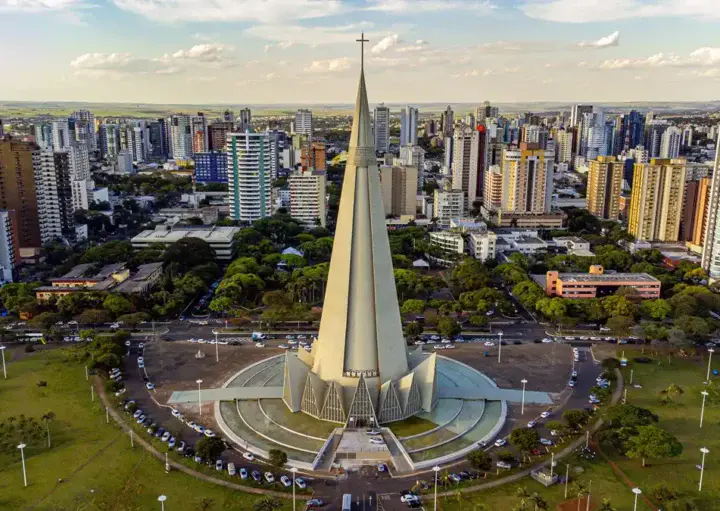

O Paraná é um dos estados mais desenvolvidos do Sul do Brasil, com uma economia bastante diversificada que inclui agricultura, indústria e setor de serviços. Destaca-se na produção de soja, milho, trigo e no cultivo de frutas. A capital Curitiba é referência em urbanismo e sustentabilidade, famosa pelo transporte público eficiente e áreas verdes. O estado também abriga as Cataratas do Iguaçu, uma das maiores e mais impressionantes quedas d’água do mundo, que atraem milhões de turistas anualmente.
 Voltar